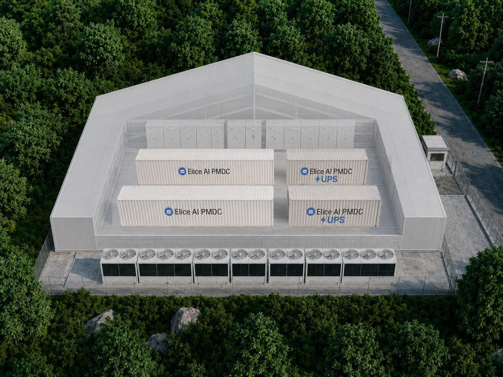

Executive Summary
This article looks at how Elice, a company that started as an education platform and widened into GPU cloud and modular AI data centers, ended its first day on the Kosdaq market on October 20. The offering itself ran hot. In institutional book-building, 2,367 institutions came in at a ratio of 388.84 to 1, and the retail tranche drew 10.26 trillion won in subscription deposits. Then trading opened, and the stock stopped at 61,500 won, 32.04% below the IPO price of 90,500 won.
The number that explains the gap between those two scenes sits in the company's securities registration statement. Of the 34.4 billion won in revenue booked in the first half of 2026, about 22.5 billion won came from AI infrastructure support programs run by the National IT Industry Promotion Agency (NIPA). That is 65.6%, close to double the 34.3% recorded in the full prior fiscal year of 2025. An IPO price is set by looking at how fast a company is growing; the price after listing asks again where that growth came from.
Sections 1 through 4 follow the facts as the company filed them and as the day's reporting recorded them. Section 5, which asks whether value is made by the data an organization gathers or by the compute it buys, is this article's own reading.
Key Figures
The first two happened on listing day. The other two were already written into the filings well before that day.
Sources: ZDNet Korea, TechM (October 20, 2026), and the company's securities registration statement
−32.04%
First-day close
An IPO price of 90,500 won became 61,500 won. The intraday low reached 56,500 won
10.26tn won
Retail subscription deposits
The retail ratio was 408.17 to 1. A shortage of money is not what pushed the price down
65.6%
Share of revenue from government programs
First half of 2026. In 2025 the same share was 34.3%
52.3%
Current ratio at the end of H1 2026
At the end of 2023 it was 266.9%. That is where cash went into GPU facilities
The Money Poured In. Why Did the Price Fall?
At the offering stage, institutional investors were sold on Elice. A total of 2,367 institutions took part in book-building, at a ratio of 388.84 to 1. The marketed range ran from 70,400 won to 90,500 won, and the final price landed at the very top of it, 90,500 won. The deal raised about 201.1 billion won, roughly 151 million US dollars. In the retail tranche that followed, subscriptions came in at 408.17 to 1, with 10.26 trillion won in deposits.
When trading started on October 20, the numbers changed direction. The intraday high of 77,700 won never reached the IPO price, and the low of 56,500 won sat 37.57% below it. The close was 61,500 won, down 32.04%. A market capitalization of 1.005 trillion won at the IPO price was 684.4 billion won by the end of the session.
Reporting on listing day grouped the fall into three strands. The first is the offering itself. The valuation set during the offering was heavy to begin with, and shares that could be sold the moment trading opened came out all at once. The next is the mood across the sector. Overseas companies that rent out AI compute, CoreWeave in the US among them, were spending heavily on facilities and drawing questions about profitability. The last strand is the question of how long it takes to earn back the money an AI data center absorbs, and how much is left over. The offering strand quiets down once the day's supply clears. The other two are attached to the business the company has chosen, and they have to be answered with results, quarter after quarter.
According to data compiled by Bloomberg, it was the worst first-day showing on record for a Korean IPO raising 100 million dollars or more. A fall on listing day is not rare in the Korean new-issue market, but it is unusual for a stock that pulled in more than 10 trillion won of deposits to finish day one at two thirds of its IPO price. The money that came into the subscription and the price that attached after listing answered two different questions. The first asks whether you can get an allocation. The second asks whether you want to keep holding this company at this price.
From Coding Classes to Data Centers
Elice was founded in 2015 by three KAIST doctoral students. The first thing they built was a coding education platform, also called Elice. Learners wrote code in the browser and had it graded on the spot, so giving every user a separate execution environment was the foundation of the service. The route from there to GPU virtualization, where one card is shared across many workloads, starts at that point.
What the company leads with now is a modular AI data center called Elice AI PMDC. Units are built in a factory and joined together on site, and the design carries high-density power and liquid cooling so GPU servers can be packed in tightly. Put a GPU cloud on top of that and the business becomes a neocloud, a rental cloud specialized in AI compute. Ahead of the listing, chief executive Kim Jae-won said the company would lead the global neocloud market on the strength of "full-stack capabilities spanning AI infrastructure, cloud and solutions."

The results backed the direction. Consolidated revenue in 2025 was 39.5 billion won, with operating profit of 5.2 billion won. In the first half of 2026, revenue reached 34.4 billion won and operating profit 10.3 billion won, clearing the whole prior year's operating profit in six months. For the IPO proceeds, the company named three uses: more modular data centers in the Seoul metropolitan area and the Honam region, private GPU cloud customers, and expansion abroad.
Looked at this far, the hot offering makes sense. Here is a Korean company growing inside the hottest field in technology, earning a profit instead of stacking up losses. One question is missing from the picture, though. Whose pocket did that profit, doubled in six months, come out of?
The Three Numbers the Market Asked About
The first is where the revenue comes from. Of the 34.4 billion won booked in the first half of 2026, about 22.5 billion won came from government support programs contracted with the National IT Industry Promotion Agency. That is a share of 65.6%. In 2025, revenue of the same kind was about 13.5 billion won, or 34.3% of the total. In under a year, the center of gravity of the company's revenue shifted toward the public sector. The company itself wrote in its securities registration statement that a reduction in government-program revenue could lower both revenue and profitability.
That does not make public-sector orders bad revenue. National AI infrastructure programs exist to create demand in a market that has none yet. This demand, though, arrives in contract-sized pieces. Whether a follow-on order appears, and whether the same company wins it again, is known only once the current program ends. Compute that a private customer used this quarter mostly stays next quarter; revenue from a public program does not carry over that way.
The second number is the current ratio. It stood at 266.9% at the end of 2023 and had fallen to 52.3% by the end of the first half of 2026. The third is depreciation: 12.9 billion won in the first half of 2026 alone, equal to 37.4% of revenue over the same period. The two numbers show one situation from two angles. GPUs and data center equipment take cash out the moment they are bought, then come back as expense over the following years. If revenue cannot keep up with the pace of the buildout, the balance sheet tightens even while operating profit is positive.
The three numbers gather into one question. If the party stepping up to use the facilities built so far is mainly the government, when does private demand arrive, and at what size? No filing answers that yet. The company's stated plan to build a Honam-region data center with the IPO proceeds and widen its private customer base reads as a sign that it is asking itself the same thing.
Not Only a Kosdaq Story
The timing worked against the listing too. Sentiment toward AI infrastructure companies in the US had cooled noticeably. CoreWeave, the best-known name in the group, had fallen to about half its May high; Nvidia-backed Firmus Grid scrapped its Sydney listing, AirTrunk pushed back a planned REIT offering, and Nscale met investor resistance over its target valuation. Albert Yong, managing partner and chief investment officer at Petra Capital Management, noted that Elice's debut came at a time when sentiment toward AI infrastructure companies had weakened, particularly in the US, adding that such sentiment is volatile and "often disconnected from underlying fundamentals."
Sentiment is not the whole of it. A shared calculation runs underneath this field: the payback period. Gartner holds that AI data center operators would have to earn a cumulative 8.5 trillion dollars by 2030 to cover capital spending and financing costs and still return about 12%. Its revenue forecast for AI data centers over the same period is 3.6 trillion dollars. Because of that gap, Gartner expects more than 3.5 trillion dollars of AI infrastructure spending to be exposed to impairment by the end of 2030. Bain & Company has warned along the same line that the gap between investment and revenue could settle into structural losses.
The arithmetic does not change in Korea. An AI data center takes in land, power and equipment first, then goes looking for customers who will use them. If the premise that building leads to usage holds, spending early is a head start; if it does not, spending early is inventory. Elice's first-day price is the moment Korean investors showed, right after a hot offering, that they do not grant that premise for free.
Why Pebblous Is Watching This Listing
What held our attention in this episode is not the share price but the character of the revenue. A share of 65.6% does not say there is no demand. It says a large part of today's demand is subsidized demand. Subsidized demand is a ladder that lets facilities go up before the market exists. Whether the facilities stand on their own once the ladder is taken away is a separate thing to prove.
The same structure sits on the buying side of compute. The first thing an organization does after deciding to do AI is usually to secure GPUs. A budget is approved, a contract is signed, the equipment arrives. What state the data going onto that compute is in gets checked later, generally after a training run. Labels have been applied against different criteria; there is no record of which site a sample came from or under what conditions; the same object sits in the set under two names. Compute does not repair any of that. It only trains on it faster.
So the question the market put to Elice on listing day is not one that data center operators alone have to answer. Can you show, in numbers, that what you built is producing value? Any organization that has brought in AI infrastructure can turn the same question on itself. Of the compute we bought, how much produced value, and what grew that share: more GPUs, or data put into a state it could actually be used in?
That is where Pebblous spends its effort, on getting data into a state AI can use directly. Compute can be pulled forward with money. Data readiness does not appear the same day the money is spent. The side that shortens the payback period is usually not the facility but the material that goes into it.
Editor's Note
Judging the business on a single day's decline would be early. The fact that the IPO price was fixed at the top of the marketed range explains part of the fall by itself. The 65.6% this article looked at, though, was in the filings before the listing. While 10 trillion won flowed into the subscription, that number was sitting in the same place.
Thanks for reading this far. The figures here were checked against listing-day reporting and against coverage citing the company's securities registration statement, and where sources differed we took the value that two or more of them agreed on. If you have brought in AI infrastructure, we would be glad to hear what you watch to tell whether it is earning back what it cost.
Pebblous Data Communication Team
October 21, 2026
References
News Coverage
- 1.ZDNet Korea. (2026). "Elice Group Falls 32% Below IPO Price on First Kosdaq Trading Day." October 20, 2026.
- 2.TechM. (2026). "A Rough Kosdaq Debut for the "Trillion-Won" Elice — Down 32% on Day One." October 20, 2026.
- 3.EBN. (2026). "Elice Group Posts One of the Worst First-Day Kosdaq Debuts on Record." October 20, 2026.
- 4.Numbers. (2026). "Elice Group Heads Toward IPO With NIPA Dependence in the 60% Range — A Bet on the Private Market." August 24, 2026.
- 5.Invest Chosun. (2026). "Can Elice Group, Built on Government Contracts, Sustain a Trillion-Won Kosdaq Valuation?." September 15, 2026.
Company Statements
- 6.Elice Group. "GPU/NPU Edge AI Data Center — Elice AI PMDC." Elice Group Newsroom.
Industry and Analyst Outlook
- 7.Gartner. (2026). "Gartner Says Over $3.5 Trillion of AI Infrastructure Spending Could Be Exposed to Impairment by the End of 2030." Gartner Newsroom, October 14, 2026.
- 8.Bain & Company. (2026). "AI Data Center Boom: Can We Build It If They Come?" Technology Report 2026, September 29, 2026.